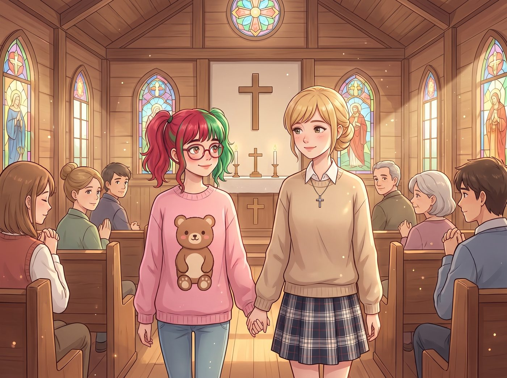
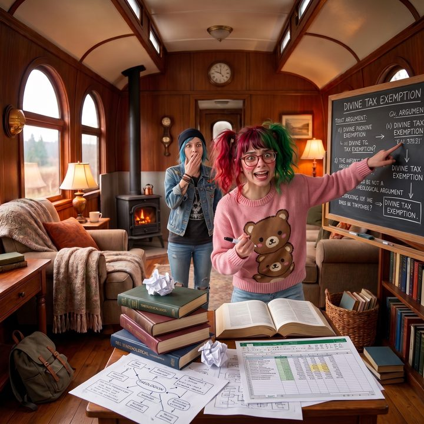

聖約與合規框架


當 Kate 提議帶 Lily 去鎮上的小教堂做主日禮拜時，Chloe 甚至在車廂裡開出了十比一的賠率，賭這個披著人皮的 Excel 會在牧師唸聖經時無聊到睡著，或者當場查出教堂的消防違規記錄，然後一通電話把執法人員叫來封鎖現場。
然而，這兩件事都沒有發生。在長達兩個小時的禮拜中，Lily 展現出了比任何虔誠信徒都要恐怖的行政級專注力。
一、不可撤銷的單邊信託契約
坐在陳舊的木製長椅上，Lily 既沒有打瞌睡，也沒有無聊地玩手指。她穿著整潔的粉色洋裝，背脊挺得筆直，腿上攤開著一本厚厚的筆記本。那雙大眼睛在反光圓框眼鏡後閃爍著極度狂熱的求知光芒，彷彿她參加的不是一場鄉村教會的主日學，而是一場由聯邦最高法院大法官親自主持的頂級法理學研討會。
當牧師在台上慷慨激昂地講述《舊約》中，上帝與亞伯拉罕立下的聖約時，Lily 湊到 Kate 耳邊，用軟糯的氣音發出了由衷的驚嘆。
「Kate 學姐，這是一份多麼完美的不可撤銷單邊信託契約啊。」Lily 激動得雙頰微紅，筆下生風，「上帝作為委託人，提供了無限期的資產保護與領土授權，而唯一的對價僅僅是絕對的合規服從。這種無需第三方公證、卻能跨越數千年有效執行的底層協議，簡直是人類契約史上的奇蹟！」
Kate 愣了一下，雖然沒聽懂那些冰冷的法律詞彙，但看到 Lily 如此投入，小天使欣慰地露出了溫柔的微笑。
二、終極合規框架
接下來，牧師講到了十誡。
Lily 的眼睛更亮了。她在筆記本上迅速畫出了複雜的樹狀圖，並用紅筆標記了重點。
「十條絕對清晰的營運紅線，沒有任何模糊地帶，且附帶無限責任的違約懲罰。」Lily 緊緊握著筆，語氣中充滿了對上帝的頂禮膜拜，「這套終極合規框架的設計邏輯，比證券交易委員會的內部指引還要嚴密一萬倍。如果我能把這種不解釋、不妥協、直接天罰的底層邏輯寫進我們畫廊的免責聲明裡，Victoria 學姐的資產回報率至少能再提升百分之二十！」
三、現金流審計漏洞
到了奉獻環節，看著信徒們將現金放入傳遞過來的奉獻盤，Lily 卻溫柔地皺起了眉頭，職業病瞬間發作。
「Kate 學姐，這種純現金的無痕流轉方式，在非營利組織的免稅審計中存在極大的漏洞。」Lily 擔憂地看著那個奉獻盤，彷彿看到了一個隨時會引爆的財務地雷，「如果缺乏雙重簽名的入帳憑證與信託帳戶隔離機制，很容易引發國稅局的洗錢調查。等一下結束後，我需要向牧師提供一份免費的現金流控管與合規審計改善計畫書。」
坐在旁邊的 Kate，看著 Lily 筆記本上密密麻麻的上帝律法架構圖、原罪與無限連帶責任清單，以及赦罪機制中的豁免條款分析，感動得眼眶泛淚。
在 Kate 的視角裡，她只看到這個十九歲的女孩，整整兩個小時都保持著極度的虔誠與專注。她甚至因為聖約的偉大而激動得臉頰泛紅，用心記錄下了主日學的每一個細節。
「Lily，妳能如此認真地聆聽主的話語，並從中感受到律法的威嚴與恩典，我真的太高興了。」小天使溫柔地握住 Lily 的手，覺得這是一場完美的屬靈交流。
四、神聖文本的世俗挪用
當兩人回到二號車廂時，Chloe 迫不及待地扔下滑板湊了過來。
「所以呢？我們的黑魔法師在教堂裡是被聖水淨化了，還是無聊得把聖經當成密碼本來解密了？」Chloe 壞笑著問。
Lily 推了推眼鏡，意猶未盡地總結了她充實的一上午。
「那是一場非常精彩的跨世代無形資產管理與終極風險控制大師課。」實習生將筆記本放在工作台上，眼神裡閃爍著全新的靈感，「我從《聖經》的赦罪機制中，獲得了關於無限期責任豁免的全新啟發。我決定今晚就套用這套神學邏輯，去重新起草一份針對華盛頓州稅務局的反向索賠聲明。」
Max 默默地舉起相機，拍下了 Lily 準備用神學理論去恐嚇稅務局的狂熱模樣；而 Chloe 則張著嘴，發覺自己再一次低估了這個披著人皮的 Excel。
只有 Kate 依然繫著圍裙，滿臉欣慰地為 Lily 切了一塊剛烤好的磅蛋糕。在這個魔幻的車廂裡，大天使和行政黑魔法師顯然在絕對律法這個概念上，達成了一種只有她們自己才懂的、極度和諧的神聖共鳴。